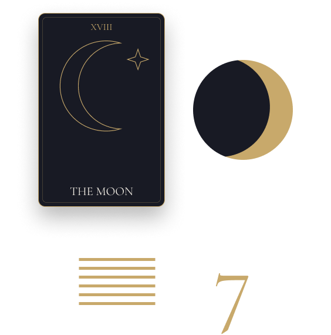
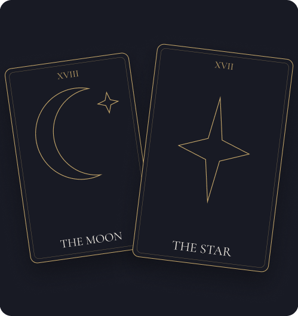
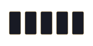
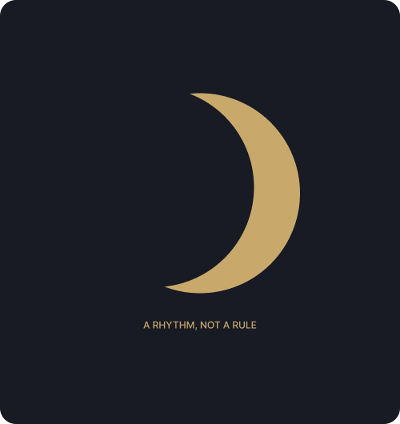
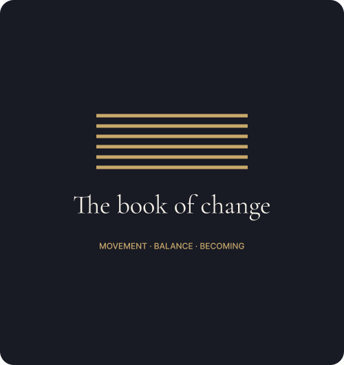
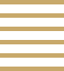
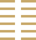
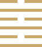
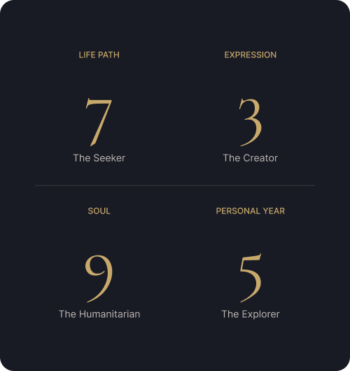

DAWN ORACLE
Different doors. The same intention.
Ancient methods for modern questions.
Different traditions offer different ways of seeing.

Which method is right for you?
See the question from another angle.

Tarot
Tarot uses archetypal imagery to explore patterns, relationships, choices and possibilities.
Best for
Clarity · Relationships · Choices · Archetypes

Moon Oracle
A contemplative method centered around emotion, intuition, cycles and inner awareness.
Best for
Emotion · Intuition · Cycles · Inner reflection

I Ching
The I Ching offers a contemplative framework for understanding change, balance, movement and decisions.
Best for
Change · Decisions · Balance · Direction

Numerology
Numerology explores symbolic patterns connected to your birthdate and name.
Best for
Identity · Patterns · Life paths · Personal timing
METHOD 01
TAROT

Read the symbols. Discover the story.
Tarot uses archetypal imagery to explore patterns, relationships, choices and possibilities.
BEST FOR
Love · Relationships · Career · Decisions · Personal growth · New beginnings
HOW IT WORKS
01 Ask your question
02 Choose your spread
03 Draw your cards
04 Explore the interpretation
Find a shape for your question.
One Card
Three Card

Five Card
Relationship
Crossroads
METHOD 02
MOON ORACLE

Listen to what moves beneath the surface.
A contemplative method centered around emotion, intuition, cycles and inner awareness.
BEST FOR
Emotions · Relationships · Intuition · Transitions · Rest · Personal growth
HOW IT WORKS
Notice your emotional landscape
Explore the phase that meets you
Listen to your intuition
Reflect on what is ready to shift
Find out what does the moon say
New Moon
BEGINNING
Crescent
EMERGENCE
Full Moon
CLARITY
Waning Moon
RELEASE
METHOD 03
I CHING

The ancient book of change.
The I Ching offers a contemplative framework for understanding change, balance, movement and decisions.
BEST FOR
Decisions · Transitions · Balance · Change · Direction
HOW IT WORKS
ASK
CAST
INTERPRET
REFLECT
Find a shape for your question.

01 · The Creative
An invitation to begin with clear intention.

02 · The Receptive
Make room for listening before movement.

63 · After Completion
Balance asks for continued attention.
METHOD 04
NUMEROLOGY

Discover the patterns hidden in numbers.
Numerology explores symbolic patterns connected to your birth date and name.
BEST FOR
Identity · Patterns · Life paths · Personal timing
HOW IT WORKS
Bring your birth date and name
Explore your core numbers
Notice recurring themes
Reflect on your personal timing
Find out what your numbers say
Life Path
BEGINNING
Expression
EMERGENCE
Soul
CLARITY
Birth DAY
RELEASE
Personal Year
RELEASE
COMPARE THE METHODS
Not every question needs the same language.
| YOUR PRACTICE | Tarot | Moon Oracle | I Ching | Numerology |
|---|---|---|---|---|
| Love | ✓ | ✓ | — | — |
| Career | ✓ | — | ✓ | ✓ |
| Relationships | ✓ | ✓ | ✓ | — |
| Decisions | ✓ | — | ✓ | — |
| Personal growth | ✓ | ✓ | ✓ | ✓ |
| Cycles | — | ✓ | ✓ | ✓ |
| Identity | ✓ | — | — | ✓ |
| Change | ✓ | ✓ | ✓ | ✓ |
| Intuition | ✓ | ✓ | — | — |
| Future planning | ✓ | — | ✓ | ✓ |
✓ A natural starting point. — Another method may offer a closer fit. All methods support exploratory reflection, not deterministic prediction.
Clarity begins with attention